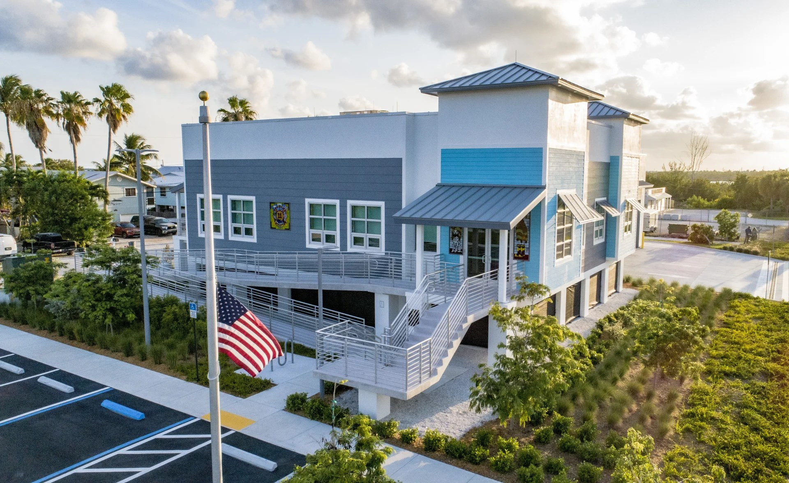
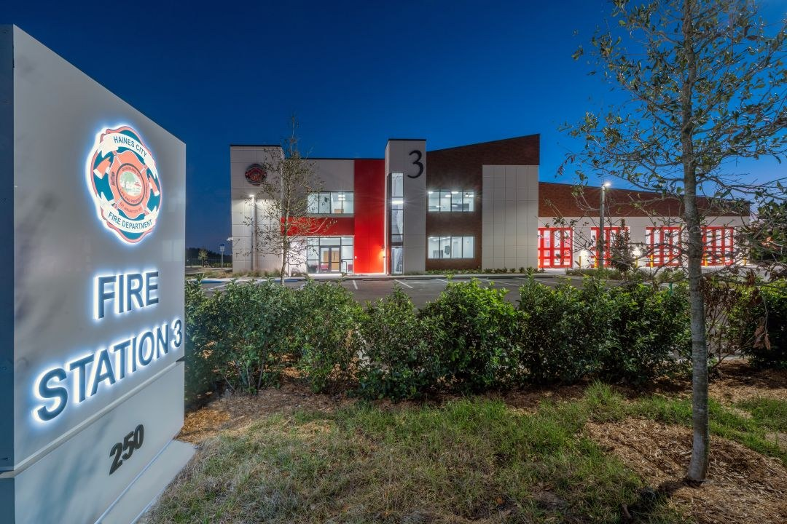
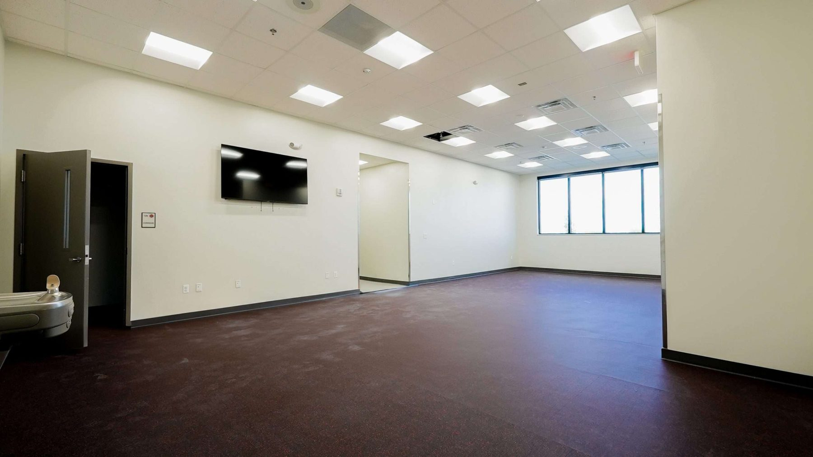
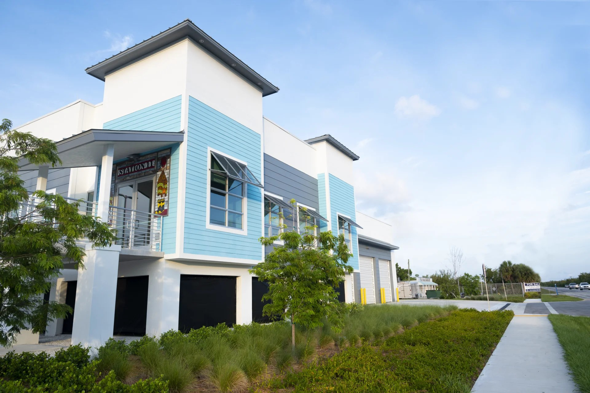
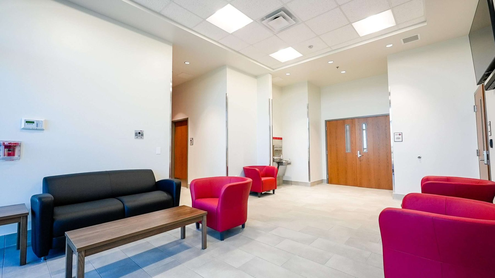

Government & public-sector glazing.
ACG installs commercial glazing on essential facilities, emergency operations centers, fire and rescue buildings, and municipal construction across Florida. We understand the compliance documentation, bonding requirements, and public-project schedule discipline these jobs demand.
Who is a government glazing contractor in Florida?
Government and public-sector glazing in Florida is handled by American Commercial Glass for buildings including fire stations, fire training facilities, and emergency operations centers. ACG self-performs impact-rated storefront, curtain wall, and fire-rated glazing under NAICS 238150, holds Florida license CGC #1531993, and is woman-owned with .

Haines City Public Safety Complex & EOC
Florida Building Code Risk Category IV essential facility - 25,443 SF. ACG served as the glazing subcontractor to Pirtle Construction, with glass systems by Aldora. Essential-facility designation required increased wind-load calculations, enhanced anchorage documentation in submittals, and coordination with the structural engineer of record. Completed 2025.
Track record on essential facilities.





Fire Training
How ACG reads the codes on public-sector jobs.
Essential-facility designations, wind zone requirements, and state code adoptions differ between Florida and Tennessee. ACG prepares submittals to the controlling framework from bid day forward.
Sources: Florida Building Code 8th Edition (2023), FBC Chapter 16, ASCE 7-22, Florida product approval database.
Qualified for public procurement.
ACG maintains the bonding process, insurance, and project documentation to respond to public ITB and RFQ requirements. Pre-qual packages available within 24 hours of request.
CGC #1531993
Florida - American Commercial Glass, Inc. Active, unrestricted. Florida licensure does not transfer to Tennessee.
Performance & payment
Bonds provided on projects that require them. Capacity letters available during prequalification.
Woman-owned business, WBENC certification in progress
51% owner Rielly Walsh, CEO. WBE and Status detail →
QTQYMLLL9PS4
Registered in SAM.gov under NAICS 238150. Registration documents furnished on request.
234B0
Assigned through SAM.gov registration. Contact ACG for federal registration documents.
OSHA 30
OSHA 30 trained field crews. EMR documentation available on request.
2021
Founded February 2021. Owner-operated commercial glazing delivery across Florida.
24 hours
Full pre-qualification package - insurance cert, bond letter, license copy, safety summary - within 24 hours of request.
What we install on public-sector projects.
How ACG works public Florida.
Division 08 sub to the GC of record
On public-sector work, ACG operates as a glazing subcontractor to the general contractor of record. Completed scopes include work with Pirtle Construction (Haines City EOC). Additional GC references available on request - ACG does not disclose client relationships without consent.
Pre-qual in 24 hours
GC prequalification packages - bond capacity letter, insurance certificate, CGC license, safety summary - delivered within 24 hours. Contact connor@acglass.com.
Public-project documentation
Certified payroll on Davis-Bacon-funded scopes, Florida Product Approval and NOA paperwork as a matter of course, and closeout packages assembled as milestones complete - never chased at TCO.
Federal pursuits
For the federal procurement path - SAM.gov, UEI/CAGE, set-aside programs, FAR subcontracting plans - see the federal glazing subcontractor page.
What procurement teams ask.
Who does government and public-sector glazing in Florida?
American Commercial Glass delivers glazing for government essential facilities - EOCs, fire stations, and municipal buildings - meeting Florida Building Code Risk Category IV essential-facility requirements. ACG completed the Haines City Public Safety Complex & EOC (25,443 SF, completed 2025), the Cudjoe Key fire station for Monroe County, and the Martin County Fire Training facility.
Is ACG bondable for public projects?
Yes. ACG provides performance and payment bonds on projects that require them. Bond capacity letters are available during prequalification.
Does ACG comply with Davis-Bacon prevailing wage requirements?
Yes. ACG can perform on federally funded projects subject to the Davis-Bacon and Related Acts, including certified payroll documentation and prevailing wage rate compliance for glazing tradespeople.
Is ACG woman-owned?
Woman-owned · Rielly Walsh, CEO and 51% majority owner. See the company qualifications page.
What is ACG's UEI and CAGE code?
ACG's UEI is QTQYMLLL9PS4 and its CAGE code is 234B0. American Commercial Glass, Inc. is registered in SAM.gov under NAICS 238150; registration documents are furnished on request. Contact Connor Walsh at connor@acglass.com for current registration status.
What glazing do public buildings require in Florida?
Public essential facilities in Florida must meet Risk Category IV requirements and wind-borne debris or HVHZ impact standards. ACG installs impact-rated, code-compliant systems on public-sector work, with Florida Product Approval documentation for every opening.
Related ACG pages
- Government glazing contractor - Florida
- Company qualifications
- AT/FP blast-rated glazing - technical reference
- UL 752 ballistic glazing - levels & systems
- Forced-entry resistant glazing - ASTM F1233 / F3561
- Davis-Bacon & Miller Act compliance for glazing scopes
- TAA, BABA & Buy American sourcing for glazing
- VA hospital glazing requirements - VA 08 56 53
- Glazing subcontractor vs general contractor, explained
- ACG qualifications package
Bidding a public-sector project? ACG is ready to respond.
Send plans, drawings, or an ITB number - a scope summary and preliminary number comes back within 48 hours, with the pre-qual package included at no charge.